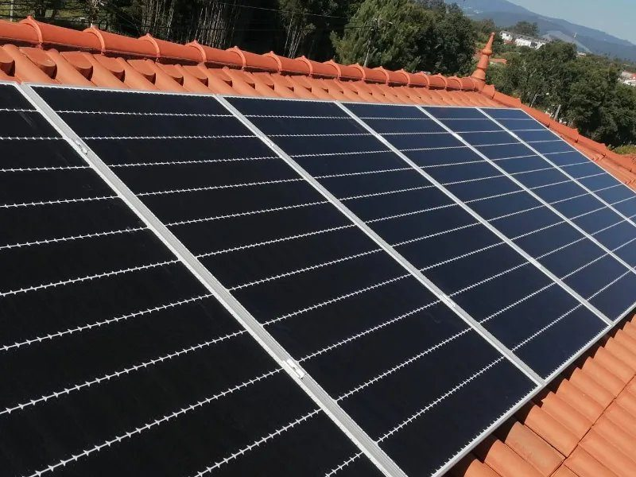

Cada pedido contactado no primeiro minuto.
Um agente de inteligência artificial que fala com cada pessoa que deixa o contacto nos vossos anúncios, faz as perguntas que hoje os comerciais fazem ao telefone, marca a chamada e deixa tudo no Notion. Os comerciais só ligam a quem está pronto.

Lead qualificada
Ana Ferreira: chamada na segunda às 18:30
- Concelho
- Albergaria-a-Velha
- Fatura média
- Cerca de 160 € por mês
- Ligação
- Trifásica, a confirmar
- Interesse
- Sistema com bateria
A luz está cada vez mais cara.
Quer saber se funciona à noite.
Respondeu em 7 minutos, ao sábado.
Pediu orçamento a outra empresa.
✓ Registado no Notion, com a conversa completa
O ponto de partida, nas palavras do Marco
“Cerca de 20 leads por dia. (…) Estamos a fechar à volta de 10, 15 processos por mês.”
“Normalmente até um dia. (…) Não é que seja muito, mas também não é o ideal.”
“Às vezes passamos se calhar duas horas a tentar chamar até conseguir um contacto efetivo.”
“Se continuar no Instagram ou Facebook mais 10 minutos, vai-lhe aparecer 10.”
Não falta procura. Falta chegar primeiro, e chegar só a quem vale a chamada.
O mesmo pedido, sábado às 15:30
A Ana preenche o formulário do vosso anúncio no Facebook. Do lado esquerdo, o que acontece hoje. Do lado direito, com o agente.
- Sábado, 15:30 O contacto entra no Notion E fica à espera do fim de semana.
- Segunda ou terça Um comercial liga Entretanto, a Ana já viu os anúncios de outras empresas. cerca de 1 dia depois
- Ao telefone Nem sempre atende Às vezes o número do Facebook já é antigo. até 2 horas a tentar
- Quando atende Diagnóstico com toda a gente Curiosos incluídos: quem paga 50 € de luz recebe a mesma chamada.
- Depois Seguimento à mão Lembretes no Notion, um a um.
- Sábado, 15:30 O contacto entra Do formulário, como hoje.
- 15:31 O agente escreve-lhe no WhatsApp Com o nome e o tom da Allenergy. menos de 1 minuto
- 15:38 a 15:47 Faz as perguntas Fatura, concelho, ligação, bateria. E fica com o número certo.
-
Cumpre os vossos critérios?
SimChamada marcada no calendário do comercial, com o resumo da conversa NãoFica no Notion com o motivo, sem gastar uma chamada
- Sem resposta? Seguimento sozinho Volta a escrever ao fim de 1 hora e de 24 horas.
O agente abre a porta. A equipa fecha a venda.
- 1Responde em segundos
- 2Faz as perguntas
- 3Qualifica
- 4Marca a chamada e avisa
- 5Liga, já com tudo
- 6Faz o diagnóstico
- 7Orçamento, como hoje
- 8Fecha
O que o torna diferente
Quatro pedidos, quatro caminhos
Escolha um cenário. À esquerda, a conversa no WhatsApp. À direita, o que o agente decide a cada passo.
Nomes e conversas ilustrativos. As perguntas, os critérios e o que o agente pode dizer sobre preços são definidos convosco. Se quiserem que dê um intervalo de preço, é configurável.
O agente que testou já está a trabalhar
Fundo Solar
É o agente que lhe enviámos a 6 de outubro para testar. A Fundo Solar vende energia solar a casas e pequenos negócios, com pedidos dos anúncios da Meta a chegar por vários canais e muitos curiosos pelo meio.
O agente pergunta o consumo, o tipo de instalação, a zona e a ligação, e passa a lead ao comercial da zona com o resumo da conversa. Os casos fora do normal vão sempre para uma pessoa.
As métricas de conversão ainda estão a ser consolidadas. Preferimos não dar um número antes de o termos.
O que isto tem de valer
Cada sistema que a Allenergy vende ronda os 8.000 €. Hoje fecham 10 a 15 processos por mês. Um processo a mais por mês já é mais faturação do que a implementação e um ano de mensalidade juntos.
E nas suas palavras: “com as mesmas pessoas, com alguma organização adicional, podermos fazer se calhar facilmente 50% mais ou 100% mais daquilo que se está a fazer agora.”
Seis semanas, e nada chega aos clientes sem o vosso sim
- Semanas 1 e 2Ouvimos as vossas conversas e fechamos os critérios. No fim, o relatório da auditoria.
- Semanas 3 e 4Construímos o agente e ligamo-lo ao formulário, ao WhatsApp, ao Notion e à agenda.
- Semanas 5 e 6Testes só convosco: fazem de cliente, apontam, ajustamos.
- ArranqueO agente passa a falar com os vossos clientes.
Avançamos, Marco?
Três passos até à primeira semana de trabalho. Nada arranca sem confirmar por escrito.
- 1Diz que sim
Por WhatsApp ou por email, com as dúvidas que ainda tenha.
- 2Recebe a proposta formal
O documento com o âmbito, os valores e as condições desta página, para assinar.
- 3Semana 1: o que pedimos
Acesso ao Notion e ao formulário dos anúncios, o número de WhatsApp a usar, e os vossos critérios de qualificação.
Manuel Condeço, AI Solutions
+351 964 251 889 ou manuel.condeco@aisolutions.pt